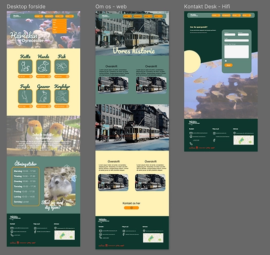
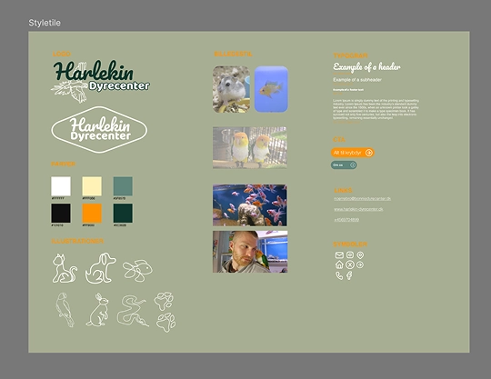
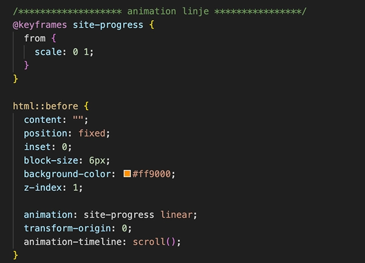
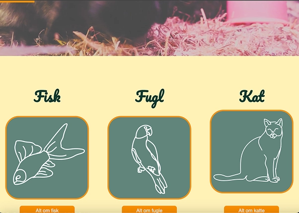
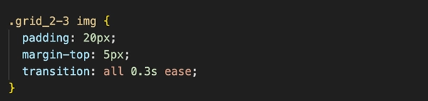
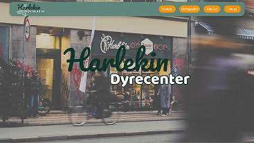
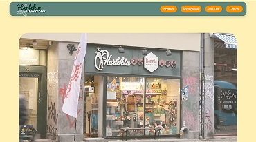
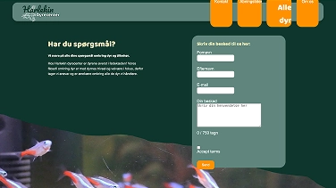
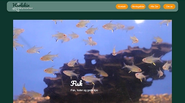

Tema 5
Grundlæggende indhold
Om tema 5
I tema 5 skulle jeg i en studiegruppe lave et redesign af en eksisterende hjemmeside. På vores nye site skulle vi selv producere alt indholdet, i form af en video, billeder, information om virksomheden, interview og alt til den visuelle identitet. Vi skulle samtidig lave trello altså en planoversigt om hvem der gjorde hvad og hvornår tingene skulle laves til. Samt skulle vi lave SCRUM som går ud på at dele et projekt op i små bider og færdiggøre lidt af gangen samtidig med at kommunikere godt i processen.
 Proces
Første del af vores redesign process, omhandlede at lave en video i programmet premiere pro for at blive bekendt med programmet. Her lavede vi en video inden vi gik i gang med den egentlige redesign opgave og fremviste den. Efterfølgende fandt vi en virksomhed, i vores tilfælde blev det dyrehandlen Harlekin på nørrebrogade. Her analyserede vi den eksisterende hjemmeside, og udplukkede det der fungerede og det der ikke fungerede og lagde en plan for det nye site, også ved hjælp af ejerens egne tanker om hvad sitet skulle bestå af. Vi uddeligerede opgaverne som bestod af Indholdsproduktionen (video+billeder), research, ideudvikling og tog koden i fælleskab og havde møder løbende i processen.
  Kode
I den kodede del af sitet gjorde vi meget brug af CSS animationer, for at få sitet til at være mere livligt og interegerende. Eksempelvis lavede vi animation linjen der skulle vise brugeren hvor langt man er scrollet ned på siderne, ved hjælp af Keyframes i CSS. Samt gav vi også vores ikoner på forsiden bløde overgange med transition så de bevægede sig når man kører musen henover. Samt blev der også tilføjet a href til svgén så den også var trykbar. Udover det lærte jeg selv hvordan man kan ligger tekst ovenpå billeder, ved at putte billede og tekst ind i en class og så snakke til den næste class i dette tilfælde hed den “tekstovenpaa”og så bruge position:absolte i CSS.
Hvad lærte jeg

GRUPPE ARBEJDE
REDESIGN
CSS ANIMATION
INTERVIEW
PREMIERE PRO
VARIABLER
INDHOLDS PRODUKTION
TRELLO OG SCRUM
Færdige site
Vores endelige redesign fik en gennemført ny identitet, med få farver en tydelig inspiration fra vores fælles moodboard og et stringent stiletile. Vores sites struktur og indhold blev sat sammen på ny og fik kun de informationer der var brug for. Eksempelvis at skrive en side om historien bag Harlekin da det var ejerens ønske at gøre denne dyrehandel til sin egen, og appelere til lokalmiljøet som kender til den.
   